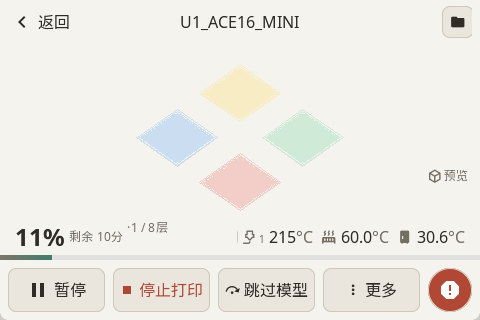

进料
选中料槽，点「进料」。机器用喷头传感器确认到料，遇到可恢复的送料异常会沿原槽有限重试。
SNAPMAKER U1 社区固件
233 已集成 MultiACE。按配套接法连好 ACE 和料管，无需手改配置，进料、退料和烘干都能直接在打印机屏幕上点。

点开「耗材」，按料仓选槽，或按喷头看当前用的是哪一路。
选中料槽，点「进料」。机器用喷头传感器确认到料，遇到可恢复的送料异常会沿原槽有限重试。
需要从喷头退回时点「从喷头退出」。要取走料卷时，用「退出 ACE」把料退出料仓。
在对应 ACE 上点「烘干」，就能选预设、调整温度和时长，也能查看仓内温湿度与运行状态。
潮了可以单独烘，打印时也能选边烘边打。支持转动的料仓还可以让料盘在烘干期间转动。
读标签、核对颜色、看余量，都围绕同一个料槽展开。
从兼容标签读取材质、颜色等资料，并关联到对应料槽。标签资料不全时，可以在屏幕上补录。
用有效的绕线测量和料盘规格估算剩余耗材重量。读数够用时显示约剩多少克，资料不足时保留未知状态。
打印页集中显示模型、进度和温度，暂停与停止并排。屏幕选好的耗材颜色，也能在网页上看见。


原厂提供 U1 的供料和打印流程，233 把外接 ACE 的常用操作直接放进机身触屏。
| 功能 | 原厂 U1 V2.1.2 | 233 固件 基于 PAXX |
|---|---|---|
| 连接和上手 | 使用 U1 原厂供料架和送料器 | 配套方案预置 MultiACE，接好兼容料仓和料路即可在屏幕上操作 |
| 屏幕进退料 | 通过触屏控制原厂送料器，支持自动和手动装料 | 按 ACE 或喷头选路，直接进料、从喷头退出或退出 ACE |
| 烘干 | 可搭配独立烘干设备 | 屏幕控制 ACE 烘干，兼容机型支持转动烘干，还可选 55 °C 边烘边打 |
| RFID 与余量 | 原厂供料架识别兼容的 Snapmaker RFID 耗材 | 读取兼容标签并关联到料槽，结合有效测量和料盘规格估算余量 |
| 打印控制 | 原厂触屏的任务与控制页面 | 模型与进度同屏，暂停和停止并排，机舱灯收进「更多」 |
| 网页管理 | Snapmaker App 和 Snapmaker Orca | 局域网内查看耗材颜色、材质和槽位，也能看机舱实时视频 |
原厂功能参考 Snapmaker U1 FAQ 与 V2.1.2 更新记录。
2026 年 11 月 24 日
PAXX 整合版已完成开机检查。实机触屏、料仓和网页数据一致，网页补丁更新后复测了配色预检。
四个独立喷头不变，可接最多四台 ACE、16 个槽。当前已核对四台在线、16 槽可见，完整 16 色任务仍待整场实测。
点选一个色块，查看示例料路。
料路示例
PLA · 陶土橙
示例按同槽号接到同一喷头。实际映射以料管接法和 MultiACE 设置为准。